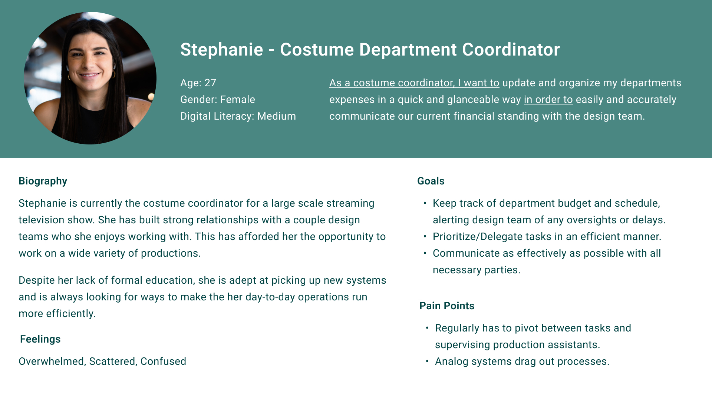
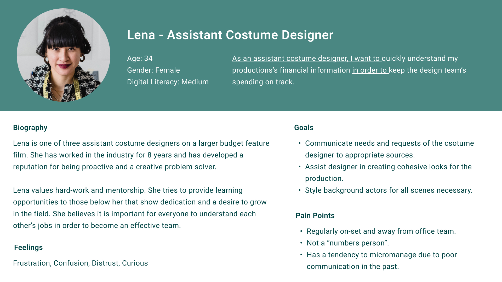
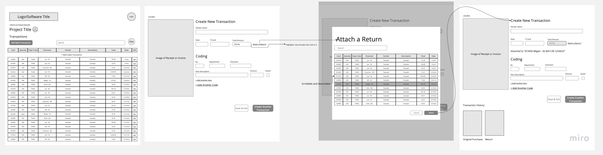
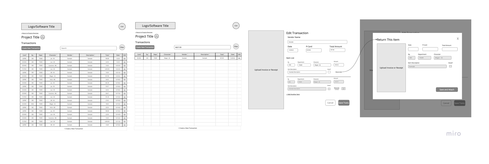
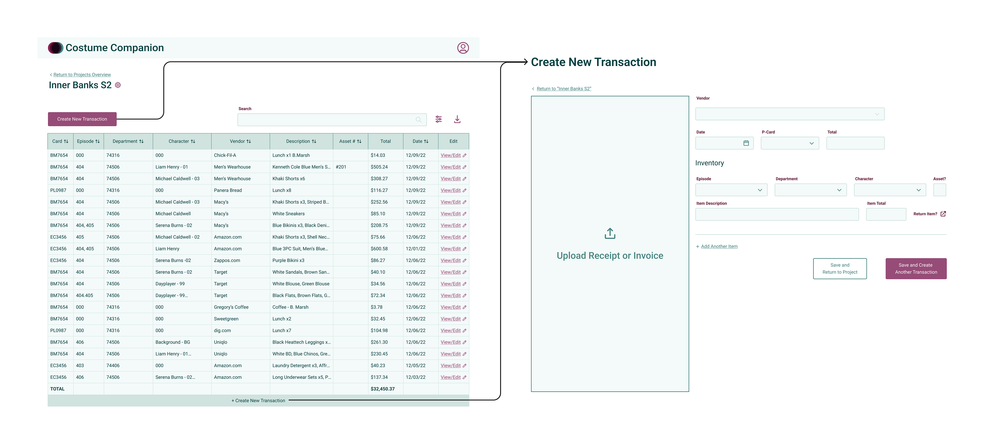

Costume Coordinators are crucial to the tv/film industry. They serve as the main point of contact for the costume department, handle tasks like sourcing supplies, and manage purchases — all while maintaining an up-to-date and accurate record of all purchases and returns made by the department. It sounds like a hectic job... because it is.
Holding onto physical receipts is a necessary evil for the costume department. Due to the high volume of purchases being made, it is likely returns will be made. In my experience working as a coordinator for NBC, hours were wasted — sometimes even days — searching through binders to find receipts every time a new bank statement rolled around. I quickly realized that, despite my best efforts at efficiency, the real answer to this outdated problem was going to be a digital solution.

An example of the current binder system for a popular historical TV series.
During my discussions with Costume Coordinators, a common census emerged: the job entailed far more than they initially expected, leaving many feeling overworked and underappreciated. Many were very receptive to the idea of streamlining processes such as receipt tracking and bank reconciliation. It was clear to me that Costume Companion would best serve costume departments as a data and asset management platform, synthesizing data from receipts, invoices, assets, and paperwork into a comprehensive financial tracking experience.
From the same conversations and USA829’s recent internal study regarding union Coordinators, I was able to zero in on who would be using this software. In New York, most of the budget tracking is done by coordinators, but it's important that assistant designers are able to easily access and understand the budget, too, as they are often the liaison between the coordinator and costume designer.
 Before putting pencil to paper, I laid out the general "flow" for how the software, paying attention to when the best time to present new options to the user would be. To make sure the platform was as comprehensive as possible, I created a feature list with all the capabilities coordinators would need on a regular basis.

Since coordinators often have to bounce between multiple tasks, I focused on creating an experience that would work well with interruptuions. Users should easily be able to stop and take breaks without losing all their information, so implementing a step-by-step process that allowed the user to easily save their work made the most sense

The trickiest part of this design was figuring out an elegant solution for someone making a return. It would be easy to allow users to input a negative amount and mark it as a return for themselves. In the interest of keeping coordinators' lives organized, it was important that they are able to see all transactions that have occurred with a purchase receipt. There were multiple iterations of what the process could look like. In the end, the simplest solution won out: Allow a coordinator to tag each item on a receipt as returned as necessary and then allow them to attach a receipt and make any edits they needed to.
Option 1
Option 2 (Solution)


Using a multi-step form allows the user to easily step away in between steps. Along with the skip button, if the user is in a time crunch, they can easily skip through the steps and edit them later. The stepper also allows them to easily see where they are in the process and how much they still need to complete.

It's relatively common that items for different characters, episodes, and departments are all purchased together on one receipt. Users can easily add new receipts, breaking them down item by item, so it's easy to see how much has been spent between each character, episode, and department.
It's also just as easy to return items on a current receipt. Edit the orginal to returns items and the updated total will be reflected in the budget overview.

The ever-changing nature of the entertainment industry means it's important for coordinators to quickly adapt to new information. Project and User settings allow users to easily remove, add, and edit existing information.


No more searching through binders for days, receipt reconciliation can be done in just a few hours.
Coordinators can easily use Costume Companion to reconcile weekly bank statements by filtering receipts by purchasing card and date range, downloading the images from the transactions, and using them to populate Cashet or other production payment solutions.
Explore the full design here:
This idea has been clanging around in my head since I was working as a Costume Coordinator, it's gratifying to finally see it fleshed out. This is also my first UX project and I learned a lot about the design process as it relates to UX. I am always impressed by how effective the sketching process is, I think if I did this again, I would spend more time exploring ideas on paper before moving on to digital iterations.
Having a background in costume design, it struck me that many of the big ideas regarding design remain the same across mediums:
1. Design is done "in service of ", whether that be a character in a play or someone using an online service.
2. Collaboration brings forth the most thoughtful and nuanced designs.
3. It is equally important to know how and when to establish patterns as it is to know when to break a pattern.
This project was very affirming for me, I saw that I can use design to create things that make a difference in people's everyday lives. I would love to expand this project eventually to create an even more productive experience for coordinators, creating new features that could allow for further customization of data into glanceable tables and spreadsheets.